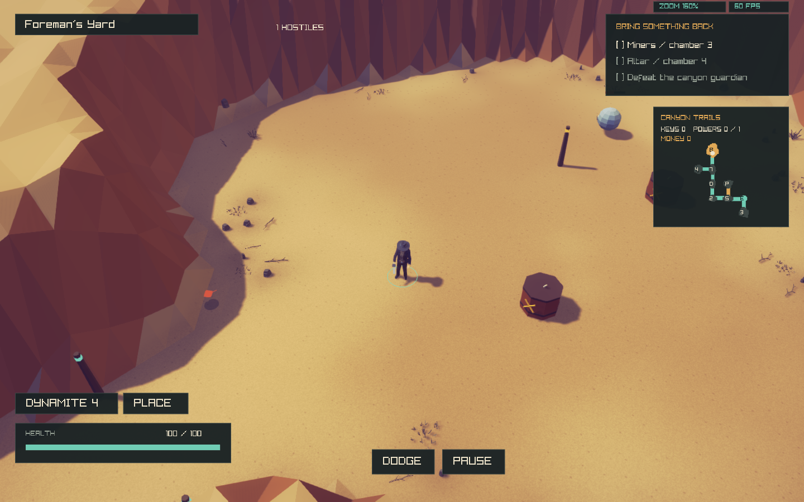
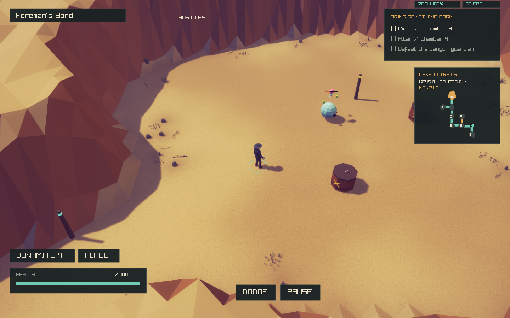

Sub Horf implementation and combined-effect checks
Ordinary812.0implemented; exact1-in-60Horf replacement enabled. Full acceptance remains open.
14sourceHP ×3.2 =44.8before the shared regular health multiplier. Tainted812.1is a separate missing actor.
Implemented behavior
- Idle and nearby player do not trigger firing.
- Projectile/explosion or external body impulses drive spin, movement and facing shots.
- Signed rotation2degrees/native-speed/source-frame; speed-dependent ordinary shot threshold; source.97friction.
- One final-death shot, retained under capacity; no duplicate death reward or premature room completion.
- Normal source14HP profile participates in the155actor regular health scale.
Combined effects checked
- Freeze+Slow: spin and firing pause; controller resumes after thaw.
- Permanent Charm: death shot keeps NPC targeting/player immunity after corpse cleanup; no hostile kill payout.
- Enemy-owned Poison+Freeze+permanent Charm: damage continues, final shot retains affiliation. Player/ally-origin damage is separately blocked by the existing permanent-Charm policy.
- Death shot+full projectile capacity: retry retains source, ownership and one-shot count; room completes after its projectile resolves.
- Existing first-floor Charm suite: Fear target selection, Confusion suppression, Slow shot ownership, frozen/swept contacts, morph/room/follower lifecycle,40basic champion combinations and recoil.
- Existing weapon-build suite:66unordered pairs including duplicates, both acquisition orders and mouse/arrow controls; chain bounds, provenance, room cleanup, dynamite and save round trips. These are synthetic target tests, not a complete Sub Horf/build matrix.
- Native render check: Freeze+Poison+temporary Charm coexist; the body preserves status tint and the visible Charm cue. The base SubHorf color is applied before shared status tinting.
Six affected native suites pass. The seeded fixture found6substitutions among346Horf slots across4000room plans, and spawned the target actor. This is controlled evidence, not full expedition balance or native binary parity.
Test results · Detailed behavior checks · Native evidence · Spawn conditions
Champion variants
All26combat types are enabled with scoped body-specific checks. Champion checkpoint, tests and native captures.
Idle
Reactive

Combined

Explicit adaptations
- Projectile/explosion impulse strengths36/60and cap24are local tuning, with source mass3. Generic15/30impulses were too weak to produce a live shot with the source speed-dependent cadence; the focused hit test caught this and dedicated tuning fixes it.
- World velocity conversion3and HP conversion3.2are explicit. Standing-target vertical compression, local damage10/radius.22/lifetime5and death-shot facing remain DeathWard adaptations.
- Blue-gray body distinguishes the reactive enemy outside native Downpour art context.
- Producer capacity pressure holds one selected live shot; final death replaces any unadmitted live shot with one final projectile. This is bounded local lifecycle policy.
Still missing
- Isaac-specific champion pickup rewards and native rarity weighting remain unimplemented/adapted in the shared system.
- Real item pickups do not yet call the status-application API. Poison/freeze/charm item activation and proc rules remain missing.
- Full Sub Horf×weapon/status/champion/morph/room/save interaction matrix is not complete; the current tests cover selected combinations only.
- Exact native final-death projectile packet/direction, special knockback sources, Dross water streams and source-specific status/item exceptions remain unverified.
- Mixed-room/occlusion visual acceptance, human balance and dense rendered performance remain open.
- Tainted Sub Horf812.1remains a separate missing actor.
Machine-readable checkpoint · Remaining champion/item interactions